Info
Percussionist, instructor, author, composer, lecturer, storyteller and project managerPercussionist, underviser, forfatter, komponist, foredragsholder, storyteller og projektleder
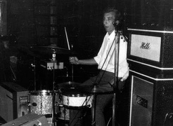
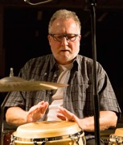
Full versionFuld version
Birger Sulsbrück er født i 1949 i Vester Skerninge på Fyn. Han har arbejdet som professionel trommeslager siden 1971 med jazz, rock, pop og latinamerikansk musik, og har undervist i latinamerikansk percussion siden 1976.
Birger Sulsbrück er leder af og congaspiller i Salsa Na' Ma, Danmarks første autentiske salsaorkester, startet i 1979. En latinkvartet i 2002: Coco Son og fra 2009 - Krølle & Cocodrilo - salsa for børn.
Som percussionist arbejder Birger Sulsbrück også med forskellige latin-, jazz- og fusionsgrupper og som studiemusiker i radio og ved pladeindspilninger.
Han har tidligere arbejdet med bands som: Cox Orange, DR Big Band, John Steffensen Latin Orchestra, Blast, Dave Hassell and Apitos, DR SymfoniOrkestret og med kunstnere som: Nana Vasconcelos, Mory Kanté, Bobby Watson, Juan Pablo Torres, Knut Kristiansen, David Libmann, Harold Danko, Zakir Hussein, Arto Tunchboyaciyan, Bob Mintzer, Hector Bingert, Celio de Cavalho og Randy Brecker (solist på Salsa Na' Ma-indspilningen fra 1982).
Han har optrådt og/eller undervist i Skandinavien, England, Skotland, USA, Italien, Cuba, Sydafrika, Tyskland, Island, Ungarn, Polen, Holland, Tyrkiet og Luxembourg.
Birger Sulsbrück underviser på Det Kongelige Danske Musikkonservatorium og var International Percussion Tutor på Royal Northern College of Music (RNCM) i Manchester, 2011-2019. Han spiller endvidere med latin jazz-kvartetten Latin Vibes og som gæstesolist med grupper i ind- og udland.
Han har tidligere undervist på Rytmisk Musikkonservatorium, Det Fynske Musikkonservatorium, Musikvidenskabeligt Institut og Danmarks Lærerhøjskole - i latinamerikansk percussion, rytmisk træning og "From Head to Body", salsa-sammenspil samt all-round og latin trommesæt.
Han har gennem årene præsenteret nye idéer som Mørke-rumba og Drum Circles, der alle er blevet en naturlig del af hans undervisningsmetoder.
En af Birger Sulsbrücks yndlingsaktiviteter er skolekoncerter for børn, og han er også en dedikeret foredragsholder med temaer som "Fra Columbus til Salsa" og "Latinamerikansk percussion er musik - ikke kun et krydderi". Han har været percussion-formand og klinikker for International Association of Jazz Educators (IAJE) og er desuden test-trommeslager og udvikler for den danske trommeproducent PJ Drums and Percussion.
Birger Sulsbrück har studeret i Danmark hos Ed Thigpen, Kasper Winding og Pablo "Papi" Arosemena. I New York hos Johnny Rodriguez Jr. og på Cuba hos Luis Abreu (Los Papines), Tomás Jiméno Díaz, Clemente Balsinde (Tropicana Orchestra), Rolando Sigler (Conjunto Rumbavana) og Guilhermo Barreto. På Cuba har han også studeret dans hos Magdalena García Moreno og Magaly Fernandez. Desuden kortere, men uforglemmelige, sessions med Tata Güines, Octavio Rodriguez og Luis Conte.
Birger Sulsbrück har privat studeret cubansk musikhistorie hos Dr. Prof. Olavo Alén Rodriguez, Center for Forskning og Udvikling af Cubansk Musik (CIDMUC) i Havanna.
Birger Sulsbrück was born in 1949 in Vester-Skerninge on the island of Funen, Denmark. He has worked as a professional drummer since 1971 playing jazz, rock, pop and Latin American music, and has taught Latin American percussion since 1976.
Birger Sulsbrück is the leader and conga player of Salsa Na' Ma, Denmarks first authentic Salsa orchestra, started in 1979. A Latin quartet in 2002: Coco Son and from 2009 - Krølle & Cocodrilo - Salsa for children.
As a percussionist, Birger Sulsbrück also works with various Latin, jazz, and fusion groups, and as a studio musician playing on radio and in recording sessions.
He has formerly worked with bands such as: Cox Orange, The Danish Radio Big Band, John Steffensen Latin Orchestra, Blast, Dave Hassell and Apitos, The Danish Radio Symphony Orchestra and with artists such as: Nana Vasconcelos, Mory Kanté, Bobby Watson, Juan Pablo Torres, Knut Kristiansen, David Libmann, Harold Danko, Zakir Hussein, Arto Tunchboyaciyan, Bob Mintzer, Hector Bingert, Celio de Cavalho and Randy Brecker (soloist on the Salsa Na' Ma 1982-recording).
He has been performing and/or teaching in Scandinavia, England, Scotland, USA, Italy, Cuba, South Africa, Germany, Iceland, Hungary, Poland, Holland, Turkey and Luxembourg.
Birger Sulsbrück teaches at the Royal Danish Academy Of Music and was International Tutor of Percussion at Royal Northern College of Music (RNCM) in Manchester, 2011-2019. He also plays with the Latin jazz quartet Latin Vibes and as guest soloist with groups in Denmark and abroad.
He has formerly taught at The Rhythmic Music Conservatory, The Carl Nielsen Academy of Music, The Institute of Musical Sciences, The Royal Danish School Of Educational Studies. The courses he has taught include:
- Latin-American percussion
- Rhythmic Training and "From Head to Body"
- Salsa bands
- All-round drumset and Latin drumset
He has through the years pressented new ideas such as: Night Rumba and Drum Circles, which have all become a natural part of his teaching methods.
One of Birger Sulsbrück's favorite activities is educational concerts for children and he is also a dedicated lecturer on themes such as "From Columbus to Salsa" and "Latin American percussion is real music - not just flavour".
He has served as percussion chairman and clinician for the International Association of Jazz Educators (IAJE) and is also a test drummer and developer for the Danish drum manufacturer PJ Drums and Percussion.
Birger Sulsbrück has studied in Denmark with Ed Thigpen, Kasper Winding and Pablo "Papi" Arosemena. In New York with Johnny Rodriguez Jr. and in Cuba with Luis Abreu (Los Papines), Tomás Jiméno Díaz, Clemente Balsinde (Tropicana Orchestra), Rolando Sigler (Conjunto Rumbavana) and Guilhermo Barreto. In Cuba he also studdied dance with Magdalena García Moreno and Magaly Fernandez. Also to be mentioned are shorter, but unforgettable, sessions with Tata Güines, Octavio Rodriguez and Luis Conte.
Birger Sulsbrück has privately studied Cuban music history with Dr. Prof. Olavo Alén Rodriguez, Center of Research and Development of Cuban Music (CIDMUC) in Havana.
By the author
"CONGAS • TUMBADORAS - Your basic conga repertoire - from Cuban music and Salsa to Rock, Jazz & Samba". Incl. two CDs. 1999/2001. Distribution: PJ Drums & Percussion, Copenhagen.
"The Little Congabook". Incl. CD. PJ Drums & Percussion Publications, 2013.
"LATIN-AMERICAN PERCUSSION, Rhythms and rhythm instruments from Cuba and Brazil", 1986. (New 2014 audio-CDs are available. And as free MP3 dowmload). Distribution: PJ Drums & Percussion, Copenhagen.
"LATIN AMERICAN PLAY-A-LONG CD" - together with Henrik Beck. PJ Drums & Percussion, Copenhagen.
Instructional video:
"LATIN-AMERICAN PERCUSSION, Rhythms and rhythm instruments from Cuba - VIDEO SESSION". Distribution: PJ Drums & Percussion, Copenhagen.
International concerts and seminars
International Tutor of Percussion, Royal Northern College of Music in Manchester, 2011-2019.
England. Workshops at Royal Northern College of Music, Royal Academy of Music, Guildhall School of Music and Birmingham Conservatoire (2013-19).
Germany. Flensburg. Percussion workshop and Drum Circle (2018).
Norway. Finnsnes Jazz Festival with Karin Krog, Roger Johansen a.o. (2015).
England. Manchester. Solo performance and concerts at "Day of Percussion", RNCM (1996, 2000, 04, 09 and 13).
England 1985, 86, 90, 93, 96, 2000, 04, 09, 13 and 14: Workshops at Royal Northern College of Music, Manchester, Institute of Performing Arts - LIPA, Liverpool, Royal College of Music, London, Guildhall School of Music, London, Royal Academy of Music, London, Trinity College of Music, London and Birmingham Conservatoire.
Concerts with Dave Hassell & Apitos Latin Band (1996-2014). Paul Clarvis (2009).
Norway. Sarpsborg. Drum Circle and percussion seminar for Sarpsborg Janitsjarkorps (2013).
England. Manchester. Salsa-seminar and concert with RNCM Big Band and invited guests (2004 and 2009). The RNCM Salsa Group (2012 and 13).
Norway. Big Band seminars and concerts in Stavanger, Lillehammer, Bergen and Hamar (2010-11).
Finland. Jyväskylä. Concerts with Rita Vargas and Markku Rinta-Polari (2011).
Germany. Wolfenbüttel Bundesakademie, Latin Percussion, "From head to Body" and Salsa Band. Three four-day seminars a year (1989-2009).
Scotland, Glasgow. Royal Scottish Academy of Music and Drama (1993, 96, 2000, 04 and 09).
Germany. University of Hildesheim. Salsa concert and seminar (2008).
Turkey. Istanbul. "Artic Subcircle" concert featuring Mory Kanté, Arto Tuncboyadiyan, Ragnhild Furebotn and Knut Kristiansen (2008).
Norway. Oslo, Kirkenes, Narvik and Harstad. "Artic Subcircle" concerts (2008).
Norway. Oslo. Seminar for the KORK Orchestra's rhythmsection. And Osøre Jazz and Blues Festival with David Amaro (2007).
Finland. Jyväskylä Summer Jazz Festival. Concerts with Celio de Carvalho, Markku Rinta-Polari, Timmo Hietala, Maika Tuhkala and Pekka Törmänen. Seminar at The Academy of Music (2005). Also seminars and concerts in 1998, 99 and 2000. In 1997 with Salsa Na' Ma.
Germany. Wolfenbüttel. Culture Festival with Salsa Na' Ma (2008).
Norway. Bergen. Natt Jazz Festival. Concert with Ernesto Manuitt. And in Stavanger. Big Band seminar and concert with Ernesto Manuitt and Knut Kristiansen (2005).
Germany. Wolfenbüttel and Hannover. Coco Son concerts, seminars and TV (2004).
Norway. Flekkefjord. Big Band seminar and "Nordisk Jazzfestival" (2003 and 04).
Norway. Stavanger. Seminars for Nmm in 1997 and 98 and at the Academy of Music (salsa band) in 2003.
Norway. Trondheim Salsa Festival. Seminar and concert with Trondheim Jazzorkester (2002).
Norway. Molde and Kristiansund. Percussion and salsa band seminars (1994 and 2002).
Norway. Oslo. Norsk Lydskole. Seminar for "Musikerutdanningen" (2000-01).
Norway. Bergen. "Natt Jazzen" Jazz Festival with Bergen Big Band feat. Hector Bingert, Knut Kristiansen, Alexander Fernandez and Olav Dale (2001).
Norway. Lillehammer. Døla Jazz Festival. Concert with Knut Kristiansen. Halden. Seminar for Halden Military Band. And The Academy of Music in Tromsø. Salsa seminar (2001).
Hungary. "Jazz 2000 Budapest" Lectures at the International Educational Conference Child and Youth Jazz Festival.
Norway. The Academy of Music in Oslo. Seminars (2000 and 2001). Trondheim. NMF Seminar "From Head to Body" (2000).
Cuba. 20th anniversary tour with Salsa Na' Ma. Concerts with groups such as N. G. la Banda, Conjunto Chappotin and Anacaona. Own CD recording with Los Papines as guest artists (1999).
South Africa, Soweto. Salsa- and percussion seminar at Funda Community College (1998).
Norway, Mandal Jazz Festival. Percussion seminar and concert (1997 and 1998).
Luxembourg. Solo concert and clinic at the International School. (1997).
Cuba. Educational and concert-tour for Rythmic Music Conservatory Salsa Band. (1997).
Norway, Tromsø. Clinics and concerts at the convention "Musik & Verdiskaping". And Oslo. "Musikk, Kultur & Samfunn". Seminars and concerts (1996).
Sweden, Gothenburg, The Academy of Music. Salsa seminars and concert (1996).
Scandinavia. Percussionist and compére at the tour with "Comida Musical" - Latin Orchestra, feat. Juan Pablo Torres, Hector Bingert, Knut Kristiansen and string section. Norway, Sweden, Finland and Denmark (1996).
Denmark. Lecture at the International Music Council Congress "Rhythmic Music Education" (1996).
Sweden. Gotland Jazzfestival with Salsa Na' Ma (1996).
Norway, Oslo. Performance at the Scandinavian Drum and Percussion Festival 1995.
Northern Norway. Tour with "Comida Musical" - Latin Orchestra, feat. Ole Paus, Hector Bingert, Gustavo Bergalli and Knut Kristiansen at Nordland Musik-festuke, Steigen Sagaspill and Varanger Festival (1995 and 96).
Germany, Hamburg. The Academy of Music - Jazz Department. Seminars in dance, salsa band and percussion (1986, 89 and 95).
Iceland. Seminars and concert with Sigurdur Flosason, Einar Schevig a.o. (1995).
Northern Norway and North Cape. Salsa project and tours - "Bacalao con Pan" - with Knut Kristiansen, Luison Medina, Olav Dale a.o. (1994-95).
Denmark. "Percussion Meeting" with Marcelo Salazar, Jacob Andersen, Desmond Appiah Boating, Moussa Diallo, Butch Lacy and Bob Rockwell (1993).
Germany, Emmendingen. "1st Percussion Intensive" with Dr. Karl Berger (1993).
Norway, Grieghallen in Bergen. Concert "O cantos dos escravos" with Knut Kristiansen and Celio de Carvalho (1993).
Germany. "Musikschule 2000". Concerts with Bob Mintzer in Solingen and Wuppertal. Salsa seminar in Leverkusen (1993).
Norway, Bergen. Seminar at Bergen School of Educational Studies in 1984 and for Hordaland Music Council in 1992 and 93.
Netherlands, Mastricht. Clinics and concert at IAJE convention and Jazz Mecca Festival (1992).
Norway. Telemark Folk Music Festival with Salsa Na' Ma (1992) and Latin quintet (1994).
Sweden, Dalarö Folkehøjskole. Seminar (1990).
Germany, Peine Salsa Festival with Salsa Na' Ma (1989).
Sweden. Stockholm. NMPU Convention. Workshops on rhythmic training and percussion (1989).
USA, Atlanta. Clinic and concerts. IAJE convention and "5 Hour Parade of Jazz Stars" including Harold Danko, Duffy Jackson and Buddy de Franco (1987).
Germany, Trossingen. Seminars and concerts for the International Jazz Federation Directed by Joachim Ernst Berendt. With Jiggs Wigham, Sigi Busch, Dieter Glawischnigg, Dick Dunscomb, Bunky Green a.o. (1982-88).
Germany, Remscheid. Performance at the Second European Convention on Jazz-Education. And Trossingen. Workshops at "Second Convention on Conductors in Brassbands" (1987).
Sweden. Seminars and concerts at the Falun Folk Music Festival (1986-89).
Germany. "Fiesta de Salsa" - Instruction and tours with Havanna Salsa Big Band (1986 and 1987).
Denmark and Sweden. "1st World to World Percussion Festival" and tour with Nana Vasconcelos, Zakir Hussein, Amadu Jahr and Atilla Engin (1986).
Faroe Islands. Concerts and seminars on salsa band, drumset and Latin percussion (1985, 86 and 87).
USA, Dallas, Texas. Concerts and clinic at the NAJE convention. "5 Hour Parade of Jazz Stars" with Dianne Reeves, Ted Piltzecker, Harold Danko and Duffy Jackson (1985).
Poland, Warsaw. Jazz Jamboree Festival with Salsa Na' Ma (1984).
Germany, Cologne. "Fiesta de Salsa" with Salsa Na' Ma. (Together with Tito Puente, Mongo Santamaria a.o.) (1984).
Norway, Bergen. "Natt Jazzen" Jazz Festival with Son Mu (1984).
Germany, Tübingen. International Jazz Workshop with David Liebmann, Bobby Watson (recording), Jamey Aebersold, Mike Stern, Rufus Reid, Adam Nussbaum, Slide Hampton, Victor Lewis, Jim McNeely a.o. (1984 and 1985).
Norway, Tromsø. Concerts and seminar with Tromsø Big Band (1983).
Cuba. One-month carnival-tour with Salsa Na' Ma. Guantanamo, Las Tunas, Ciego de Avila, Santa Clara and Havanna. Together with groups such as: Los Muñequitos de Matanzas and Cuba Son (1983).
England. Workshops at the ISME convention in Bristol and at London Jazz Center (1982).
Italy, Venice. Concert and seminar for professional percussionists (1982).
Norway, Voss Jazz Festival. Salsa seminar, concerts and TV show together with Knut Kristiansen (1982).
Bands
PERCUSSION
Salsa Na' Ma (1979- ).
Coco Son (2001- ).
Krølle & Cocodrilo (2009- ).
Latin Vibes (Morten Grønvad, Ethan Weisgard and Peter Danstrup) (2013- ).
Son Portillas (2023).
New Organ Trio (2022-2023).
Big Apple Big Band (2018).
Guerilla Latin Jazz Pop Up Band (2013- ).
Tivoli Big Band – Bobo Moreno (2013).
Ballroom (2007-11).
Danish Radio Symphony Orchestra (2010).
Great Dane Big Band (2007-08).
Berimbau (1992-2005).
Trio with Luis Varona and Elvio Bravo.
Christoffer Møller trio, Odense (2001).
The Organizers (2001).
Son En Taya (2000).
Danish Polcalypso Orchestra (1998 og 99).
Los Gran Daneses de la Salsa (1995-97).
El Duo with Lars Graugaard (1989-94).
Ulf Adåker project, Copenhagen Jazzhouse (1996).
Danish National Chamber Orchestra. Concerts for Radio and TV (1980s).
Grupo Cordero (1988-89).
Quartet with Jens Søndergård, Jørgen Knudsen and Jens Melgaard (1987).
Beaver Service (1978-87).
Mosquito. Latin Jazz quintet (1986).
Marti Webb with Niels Jørgen Steen Orchestra, Glassalen in Tivoli (1984).
Cox Orange (1975-83).
Svend Skipper TV Orchestra, "Natuglen" DR TV (1983).
Blast with Sanne Salomonsen, Hanne Boel, Tamre Rosannes a.o. (1981).
John Tchicai and Strange Brothers featuring Albert Mangelsdorf in Montmartre (1980).
Danish Radio Big Band ("Karnappen", DR TV a. o.) (1980s).
Fuzzy (studio work and DR TV show "Mand Mand" with Jesper Jensen) (1980).
Henrik Krogsgård TV Orchestra, "Nok Engang", DR TV.
The Radio Jazzgroup (1982).
Lotte Rømer Band (1979-80).
Mona Larsen, International Melodi Grandprix (1979).
John Steffensen Latin Orchestra. Radio shows and live at Montmartre (1978-1979).
Night Train with Åge Olesen, Hugo Rasmussen, Torben Munch, Ole Matthiessen, Ove Rex, Xuim a.o. (1978-79).
Mike Carr and Svend Erik Nørregård (1975-77).
Rytmads (Lars Thorup, Preben Nygård a.o.) (1975).
DRUMSET
Amris Jazz Quartet (2011- ).
John Tchicai and Strange Brothers featuring Albert Mangelsdorf (Montmartre, 1980).
Krølle-Møller-Madsens Trio (with Stig Møller and Flemming Madsen) 1980's.
Trio in Norway with Britt Vendelboe and Erik Pedersen (1973-74).
Paul Banks and Bill Hazen (1972-73).
Thor Thorup (from avantgarde and jazz to dancemusic) (1970-73).
Britt Vendelbo. Played at Vise Vers Huset in Tivoli and as quartet. Start in 1969.
Muff Syndicate. Trio with Ken Ketter and Poul Tvede (played at Gladsaxe Teenclub with Burning Red Ivanhoe, The American Embassey among others) (1968-72).
Reflections (Allan Cornelius, John Christensen, Kaj Mathiasen and Flemming Kjæld).
The No with Peter Riis, Ole Uhrskov and Ib Hansegård. Played in Hithouse in 1966.
Educational concerts
Krølle & Cocodrilo (2009- ). Still performing.
Coco Son (2002- ). Still performing.
Coco Son in Germany in 2004.
Berimbau with Bent Clausen, Charlotte Halberg and Peter Danstrup (1992-2005).
El Duo (with Lars Graugaard) (1989-1994).
Mosquito with Niels Thybo, Jacob Olsen, Bent Clausen and Hans Frydendall (1986).
Beaver Service (1886-88).
Solo concerts at the schools in Vejle Amt (1982-83).
"Latin-Rock" with Karsten Simonsen in Helsinge Kommune.
Salsa Na' Ma (1979 ...).
Holger Laumann and Jens Jefsen (1977 and 78).
Lectures on Cuban Music
Royal Northern College of Music, Manchester (2013).
Næstved, "Jazz Grooves No 6". Incl. concert (2012).
Bundesakademiet in Trossingen and Wolfenbüttel, Germany (1989-2009).
Albertslund Municipal Library (2005).
Lyngby-Taarbæk Municipal Library, 40 years anniversary (2003).
"Den Sønderjyske Højskole for Musik og Teater" (2001 and 2002).
The Vester Vov Vov Cinema ("Buena Vista Social Club") (2002).
"Den Rytmiske Højskole", Vig. Incl. concert with Coco Son (2002).
Copenhagen "Dag- og Aften Seminarium". Incl. concert with Salsa Na' Ma (2000).
ActionAid - Denmark ("Mellemfolkeligt Samvirke") (1992).
The Institute of Musical Sciences, Copenhagen (1985).
"Den Vestjyske Højskole".
F.A. Århus.
Tårnby Municipal Library (1984).
Frederiksberg Municipal Library.
Recordings
Latin Vibes. "Meet the Latin Vibes" (2024).
New Organ Trio. "Something New, Borrowed and Blue" (2023).
"Krølle & Cocodrilo". Gateway Music.
"CelleVibrationer" with Martin B. Pure Sound Production (2009).
"Cuban Flavour". DR Big Band. Cope Records. Project Manager and Co-Producer (2004).
"Latin American Play-A-Long CD" - together with Henrik Beck. PJ Drums & Percussion, Copenhagen (2003).
"Black Shoes Will Be Dancing". Maria Gomez - The Coral Negro. Humming Bird (2003).
"Worldmusic from Denmark 2000" (incl. Salsa Na' Ma).
"Salsa Na' Ma in Cuba". Percussion Center, Copenhagen. 1999. 20th anniversary CD!
"!QUE¡", Miguel Castillo & Araucano (1999).
"Worldmusic from Denmark '97" (incl. Salsa Na' Ma).
Knut Kristiansen, "Monk Moods". Odin Records, Norway (1995).
Coparuba, Latin Jazz Band. Petershagen Gymnasium, Germany (1996).
Salsa Na' Ma. "Diferente", Wilhelm Hansen (1987).
Bobby Watson. "Advance" Live from International Jazz Workshop '84" Tübingen, Germany. With Jim McNeely, Tod Coolman and Adam Nussbaum. RHINO (1984).
Kasper Winding (Film score, "Johnny Larsen").
Jarl Friis Mikkelsen. "Dan Kester". Mercury (1983).
Salsa Na' Ma. "Salsa Na' Ma" (Guest: Randy Brecker). Music Mecca (1982).
Jesper Jensen, Fuzzy and Theis Jensen. "Mand Mand". CBS Records (1980).
Cox Orange. "Cox Orange 2". Amar Records (1980).
Lotte Rømer. "Lotte Rømer 2". CBS (1980).
Arne Würgler. "Med Egne Ord" Exlibris (1980).
Sebastian, "Cirkus Fantastica" (1979).
Lotte Rømer. "Lotte Rømer". Metronome (1978).
Cox Orange. "Cox Orange". Amar Records (1977).
Other: Vesterbro Ungdomsgård and various Faroe artists.
Simonsen Brothers. Single (ca. 1970).
Other recordings
Jazzprofile at DR Radio "Jazzoom" (2012).
Radio Jazz with Jens Lohmann a.o. (... – 2012).
Danish Radio Symphony Orchestra, Live DR Radio (2010).
Jazzprofile of the week (DR). Martch 2004.
Music consultant, composer and musician for the film: "Y despues Que". (Danish Film School (1989).
Fuzzy: Cartoon: "Samson and Sally" (1988). Aarhus Theater: "Maskerade" (1984). "Denmark Film" (1982).
Allan Botschinsky (DR production).
DR/TV: Harlem Dancers. Percussion soundtrack (8 percussionists).
Radio show, "Salsa - Cuban sauce", with Ole Mathiesen, DR (1981).
Radio shows for Radio Jazz with Steen Meier.
Various
Articles for "Jazz Educators Journal" IAJE, USA.
"Latin American Percussion Styles" - "Latin American Percussion is real Music, not just 'flavour'" (1986). "Cuban Music Styles" (1988).
Teaching in Denmark
"THE START"
"Den Rytmiske Aftenskole":
The first teaches-team (1977-79). In-service courses (1980-1991).
Vallekilde Folk High School:
Music teacher seminars. Latin American percussion, rhythmic training, salsa dance and salsa band (1977-1995).
The Royal Danish Academy Of Music, Copenhagen:
Latin American percussion (2005-2014).
Seminars and lectures for sound ingeneer courses (1998-2001). Salsa Band (1994-96).
Percussion and Basic rhythmic training for "MP" (1979).
All-round drumset and percussion for "AM" (1978-1986 and 1993-96).
The Danish National Chamber Orchestra. Seminar for the orchestra's rhythmsection (2013).
The Rhythmic Music Conservatory, Copenhagen:
Planning and leading Cuban Music Week with 21 Cuban instructors (2002).
Seminars and lectures for the sound engineer courses untill 2004.
Salsaband 1992-2000. Leader of educational tour to Cuba for the Salsa Band in 1997.
Latin American percussion, Rhythmic training, all-round drumset, Salsa Band (for all students) (1985-97).
The Royal Academy of Music, Aarhus:
Major subjects (2001-2002). Salsa seminar (2000). Latin American percussion for "AM" (1978-81 and 85).
The Academy of Music, Esbjerg:
Latin American percussion (1979, 80, 91, 93, 98 and 2003).
The Carl Nielsen Academy of Music, Odense:
Latin American percussion, the Jazz Line (1992-2001).
Seminars for "AM" and "Performer" course (1982 and 1990).
The Academy of Music, Aalborg: Latin American percussion (1978-79 and 1993).
The Institute of Musical Sciences, Copenhagen:
Percussion and drumset. (1979-82 and 1995). Several lectures on Cuban music.
University Center of Aalborg (1980 and 81). Latin percussion.
The Royal Danish School Of Educational Studies:
Vordingborg (1978-83 and 85). Copenhagen (1978-84). Bornholm 1984. Skive (1977-1983).
Aarhus and Esbjerg (1981).
Brandbjerg Folk High School. Summer Jazz Seminars (1978-81). The Rhythmic Music Conservatory "East-West" seminar (1991).
Vejle Council. Seminars for musicteachers. Five two-day seminars a year (1983-1991).
Center for Rythmic Music and Dance, Silkeborg: Seminars and Major subjects (1991-2001).
The National Film School Of Denmark:
Music adviser and musician for the Thomas Stenderup production "¿Y Dispues Que?" (1988).
The Folk High School for Music and Theater:
"Rhythms Ahead" (Congas, djembe, Stomp). Seminars with Bennedikte Steen Andersen (2001 and 2002).
Gerlev Folk High School. Seminars for STOR-MUS Association of Music Teachers (2002, 04, 06 and 10).
Rødding Summer Seminar for the Association of Music Teachers in Denmark:
Congas, salsa dance and salsa band (2000, 01 and 02).
DMpF (Musicteachers Union), Copenhagen, Aarslev, Aarhus, Næstved, Sorø. Latin American percussion solo lessons (1980-81 and 1985-96). Herning Music Fair. Workshops with Henrik Beck (1988, 90 and 92).
Storstrøms County. Seminars with Hanne Boel, Poul Chr. Nielsen a.o. (1980-82 and 87).
(For further info on teaching in Denmark see the Danish website: www.birgersulsbruck.dk)
Short versionKort version
Birger Sulsbrück er leder af og congaspiller i Salsa Na' Má - et latinorkester fra København, startet i 1979. I 1999 fejrede Salsa Na' Má sit 20-års jubilæum på Cuba - med koncerter og en CD-indspilning. Birger Sulsbrück er også leder af latinkvartetten Coco Son og Krølle & Cocodrilo - salsa for børn.
Som percussionist arbejder Birger Sulsbrück også med forskellige latin-, jazz- og fusionsgrupper og som studiemusiker i radio, tv og ved pladeindspilninger. Han har bl.a. arbejdet med Dave Hassell, Knut Kristiansen, Juan Pablo Torres, David Liebmann, DR Big Band, Nana Vasconcelos, Bobby Watson, Harold Danko, Zakir Hussein, Mory Kanté, Bob Mintzer, Celio de Carvalho og Arto Tunchboyaciyan.
Birger Sulsbrück underviser på Det Kongelige Danske Musikkonservatorium og var International Percussion Tutor på Royal Northern College of Music i Manchester, England (2011-2019). Han har gennem årene præsenteret nye idéer som Mørke-rumba og Drum Circles, der er blevet en naturlig del af hans undervisningsmetoder.
Han har optrådt og/eller undervist i England, Skotland, USA, Cuba, Island, Sydafrika (Soweto), Tyskland, Ungarn, Polen, Holland, Finland, Tyrkiet, Luxembourg og Skandinavien.
Birger Sulsbrück is the leader and conga player of Salsa Na' Má – a Latin orchestra from Copenhagen, Denmark, started in 1979. In 1999 Salsa Na' Má celebrated its 20th anniversary in Cuba – playing concerts and recording a CD. Birger Sulsbrück is also the leader of Coco Son Latin quartet and Krølle & Cocodrilo – salsa for children.
As a percussionist Birger Sulsbrück also works with various Latin, jazz and fusion groups, and as studio musician playing on radio and television and in recording sessions. He has also worked with artists and bands such as Dave Hassell, Knut Kristiansen, Juan Pablo Torres, David Liebmann, The Danish Radio Big Band, Nana Vasconcelos, Bobby Watson, Harold Danko, Zakir Hussein, Mory Kanté, Bob Mintzer, Celio de Carvalho and Arto Tunchboyaciyan.
Birger Sulsbrück teaches at the Royal Danish Academy Of Music and was International Tutor of Percussion at Royal Northern College of Music in Manchester, England (2011-2019). He has formerly taught at The Rhythmic Music Conservatory, The Institute of Musical Sciences a.o. - in Latin-American percussion, salsa bands, and rhythmic training – "From Head to Body." He has through the years presented new ideas such as Night Rumba and Drum Circles, which has all become a natural part of his teaching methods.
He has performed and/or taught in England, Scotland, USA, Cuba, Iceland, South Africa (Soweto), Germany, Hungary, Poland, Holland, Finland, Turkey, Luxembourg and Scandinavia.
Birger Sulsbrück has studied in Denmark with Ed Thigpen, Kasper Winding and Pablo Arosemena. His studies in New York have been with Johnny Rodriguez Jr. and in Cuba with Luis Abreu (Los Papines), Tomás Jiméno Díaz and Guilhermo Barreto. Also to be mentioned are sessions with Luis Conte and Carlinhos Pandeiro, Tata Güines de Oro. Birger Sulsbrück has studied Cuban music history with Dr. Prof. Olavo Alén Rodriguez, Havanna, Cuba.
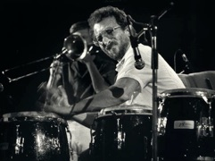
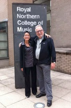
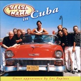
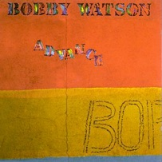
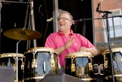
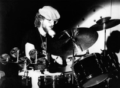
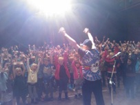
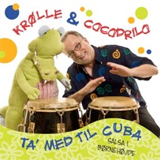
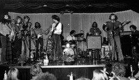
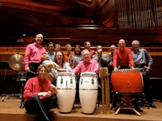